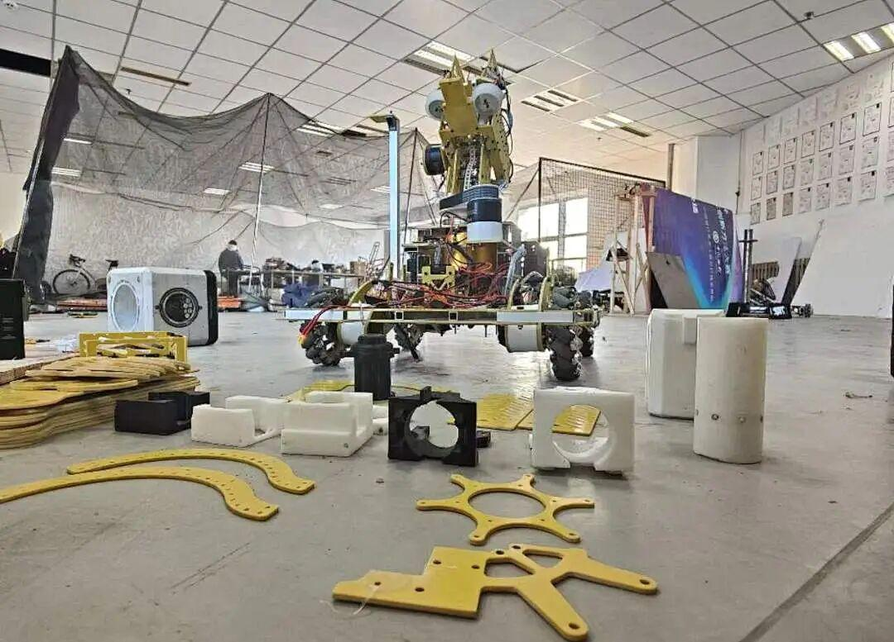
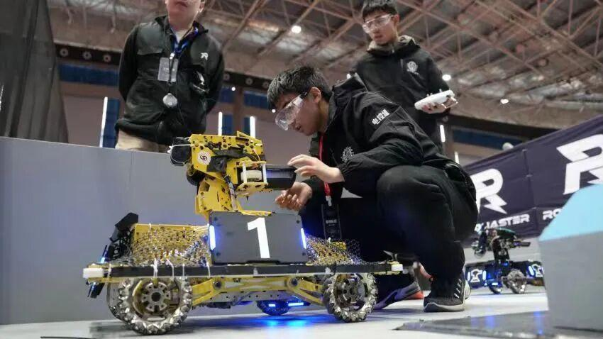

人物专访|电控的中流砥柱——张瀚文
电控组组长专访
在比赛的过程之中，观众们所看到的是完整的机器人在赛场上进行着激烈地对抗，对机器人的相关知识却知之甚少，在机甲大师的舞台上，不光是只有在聚光灯下的成员们在努力拼搏，电控组也同样扮演着至关重要的角色。今天，我们将与电控的张瀚文组长面对面，探索他对机器人技术的热爱。
人物介绍
张瀚文
——机械电子工程专业
23年12月加入战队，主要负责英雄机器人和步兵机器人的电控工作。
口头禅：“陈显卡”说得对！
为什么会加入电控组
“刚刚接到录取通知的时候，便遇到了电协社团在招新，恰巧我对机器人这个方向比较感兴趣，在加上我是机械电子工程的专业，和我的专业方向也比吻合，就加入了沈理电协这个社团，而且我对代码编写等方面很有兴趣，就加入了Ambition战队的电控组之中。”
大赛的压力
“电控组的备赛最折磨人的莫过于按照进度没几天就要出车了还是一地零件，然后全组一起放下其他活儿努力的装车。就会搞得时间比较紧张，代码调试时间较少，所以祈祷写完的代码首次运行就能非常顺利的跑起来。而且我们车组因为缺一些参数需要从头一步步的试，各种零件改动比较频繁，所以就是谁有时间就是谁去更换测试的模式，使得全组‘精通’云台及发射机构弹链的拆卸安装。”
比赛机器人的零件组装

大赛的收获
“通过这次比赛我深化对电控方面知识的理解，提高相关技术水平。学会更好地与团队成员协作，提升团队合作能力，可以更加冷静的分析问题、制定解决方案、有效应对各种挑战。加深了对机器人领域的了解，为未来的职业发展积累宝贵经验和技能。”

比赛开始前正在调试机器人的张瀚文组长
未来的期望
“期待我们团队在电控技术方面取得新的突破，如优化机器人的控制算法，提高其性能和稳定性等方面。可以为团队培养更多优秀的电控人才，使团队变得更有竞争力，也希望我们战队可以在接下来的分区赛中顺利晋级。”
通过张瀚文组长的真诚分享，让我们对电控组的工作有了更清晰的认识。“兴趣是最好的老师”这句话在张组长身上得到了很好的演绎，由最初的对机器人感兴趣、到加入战队、再到成为电控组长，一步步的成长，其中的迷茫与挫折也终被“兴趣”的明灯所驱散。正所谓兴趣的力量是无穷的，它能够激发我们的潜能，引领我们走向更加美好的未来。
E N D
排版|妄逸
图片|电协运营组
审核|xx敏